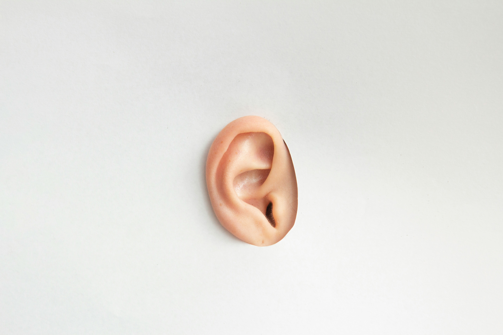

bf asmr (working title..)
last updated 22 may 2026
A theatre performance directed by Ang Kia Yee/ kyatos, under zone 境 (Singapore).

- Director, Writer - Ang Kia Yee [bio] [cv]
- Producer - Estella Ng?
- Assistant Producer & Marketing Manager (?) - Cheryl Ong?
- Performer(s) - Aditya Mirchandani Rodrigues? & ?
- Voice Actor (VA) - FuyukiVA?
- Lighting Designer - Faith Liu Yong Huay?
- Technical Design & Production - Artfactory?
A drafted overview of job scopes for all roles can be found here.
Process of querying and invitation ongoing.
An exploration of the enactments and economies of intimacy in the boyfriend ASMR genre -- a form of auditory content which offers pathways for emotional attachment and comfort for a female-centric listenership.
bf asmr aims to flirt with and confuse audience perceptions of immediacy and intimacy by bringing together recorded voice-acting by a professional boyfriend ASMR voice actor and live performance by a theatrical performer and rapper. It colludes with networked forms of intimacy and intensifies their effects in juxtaposition to embodied, live performance that produces its own energetic charge of closeness and shared affect -- thus inviting audiences to negotiate their understanding of emotional intimacy via embodied immersion (rather than intellectual cognition).
To incorporate conventional notions of romance and attendant feelings of tragedy and thwarted desire, bf asmr will also perform segments of Romeo and Juliet (1597) and selections from the 154 sonnets published in 1609 by William Shakespeare.
The performance will focus on these streams of intimacy within a heterosexual dynamic, where the male creator is the one offering an emotional service to the female listener.
۫ ׅ
What happens when the emotional load of women and femme-presenting people -- who disproportionately perform emotional labour in most of their relationships -- is relieved by an auditory proxy-boyfriend of their choosing? How do we understand the very real and felt experiences of comfort, attachment, and relief experienced by listeners? How does the nature of such intimacy economies -- sightless, highly sensory, scripted, one-way content that is closely entwined with audio technology to deliver distanced, distributed, and yet deeply embodied experiences of intimacy -- help us understand where we are now, and what most need and desire from each other?
Notions of power and transaction will be considered, enacted, and muddied. Are the listeners/ viewers the ones with power over the performer and VA in their positions as receivers of these efforts at intimacy? Or are those who speak and direct the parasocial relationship the ones with more control? How do desire and control move between consumer and creator/ product, viewer and performer, narrator and listener? How does the inherent human-to-human nature of such exchanges muddy the black-and-whiteness of a transactional relationship? How do we find real, deep closeness with one another even within a world structured by capitalist extraction? Through mutual exchange-extraction-affection, does something plausibly sustainable arise?
The aim of bf asmr is not to argue for a particular perspective, but to invite numerous vantage points into friction and resonance, open up conversations and invite deeper contemplation of the state(s) of intimacy and romance in our current era.
For the purposes of this project, we will not be engaging much with the side of boyfriend ASMR that focuses on NSFW content. This dimension may be mentioned in passing for context, but will not be otherwise explored here. We are focused on desires around romance and emotional intimacy, rather than sex.
Note: This is an initial directorial vision that serves as a starting point for development. The performance will be foremost shaped by a process of collaborative devising, discussion of ideas through continual research and introduction of relevant stimuli, material, and creation exercises. This vision serves as an initial proposal for how the show could feel, look, sound like.
Audience members watch the performance with headphones on, through which live and recorded audio by performer and VA enters their ears.
The show begins with a warm, gentle, and flirty welcome via recorded audio by the VA, which includes house announcements. This serves as the start of immersion for the audience, where the meta frame of the performance (house announcements) already begins to enact a relationship with the VA -- performing a form of dispersed, digital parasociality many are familiar with.
Over the course of the show, the live performer plays the role of a male character called M, who talks about his experiences looking for love, romance, and a partner. He moves through a gamut of thoughts and questions, philosophizing about love, wondering about how to date as a man in Singapore, and expressing an ambivalent yearning which oscillates between optimism and resignation. (I think we will inevitably alight on aspects of the "male loneliness epidemic" and patriarchal notions of masculinity which hold most cis-men back from expressing their emotions or building strong supportive friendships. But this shouldn't take over thematically.)
Throughout, the performer moves between speaking into a general, more PA-system kind of mic, and a more sensitive mic which allows for closer and more detailed sounds to be transmitted.
Moments of auditory intimacy unfold between live performer and audience, particularly as he uses the more sensitive mic to speak softly and vulnerably about his inner world. At the same time, the audience experiences another kind of closeness with recorded audio segments by the VA, which intertwines with the live performer's voice in a loose dance of relations.

WIP presentation of Descendants (2025)
My directorial style is focused on visceral stage images centred on psychic landscapes made literal (such as a man turning into a dog) through the performer's body.
I find nonlinear narratives to be more "realistic" than linear ones in how they capture the shifting internal states, desires, impulses, and fears of human beings. For this reason, in pursuing realism of the internal psychic/ emotional world of human beings, the performances I direct tend towards a sense of accumulative collage which provides a sense of narrative and development by way of repetition, variation, and atmospheric changes expressed through the performer's luminous and focused presence.
More explicit narrative elements such as plot and character tend to play supporting roles, coming in in light guiding strokes for the audience rather than the most dominant prescriptive layer of meaning.

Flicker (2015)
As a form of negotation with the current short-form media landscape, I also intentionally work certain strategies of rhythm and duration into performances, as a way of enacting and drawing audiences into a different state of attention -- one that is more sustained, leaned-in, and conscious. I take this as a form of embodied education which occurs as unspoken layer within my work.
I am okay risking boredom, frustration, and confusion on the part of the audience; I view these discomforts as necessary parts of human experience and growth. We should not be so afraid of causing these emotions in another person, and so quick to want to entertain them.
As the lead artist/ director, I like to run my performance projects over longer periods to make time for contemplation, discussion, development of ideas, and lots of time for integration in between phases, conversations, readings, stimuli. The general arts ecosystem, particularly if we acquire funding from standard funding bodies or organizations, is largely hostile in orientation to such a process.
As such, the general strategy I use at the moment is to go slowly, starting with a period of devising with low-frequency sessions (1-2 times a month) to make the process more sustainable for collaborators even without funding.
That being said, I also start of with a working timeline for the initial phase, to provide a structure which may later extend or change. Collaborators are welcome to renegotiate their involvement in or leave the project as things change.
May 2026
Initial planning + vision- 👉 Query & invite potential team members/ collaborators
- Apply for Next STAGE funding by 31 May
June to September 2026
- Initial devising/ exploration sessions with performer (3-4 sessions)
- Research: journal articles, discussions, further readings
- Further explore technical setup for the show and ask for advice from Artfactory or other technical production folks
- Hear back about Next STAGE funding & plan next steps (by July/ early August 2026)
- Plan next steps
work towards an initial prototype/ work-in-progress presentation
October to December 2026
- Devising phase goes ahead at full commitment (12-15 sessions over 3 months)
- Research deepens through devising exercises & experiments, and extended discussions
- Technical setup is attempted, tested, and sorted out
January to February 2027
- Rehearsal phase runs: 2-3 sessions/week for 5-6 weeks
- Performance in late February 2027
do the work anyway but take it slow
October 2026 onwards
- Devising phase goes ahead at reduced commitment (1-2 sessions/month) while funding pathways and presentation options are discussed
- Research deepens through devising exercises & experiments, and extended discussions
For this independent project, funding will be sought in a flexible but targeted manner, where the producer and director continually look out for potential funding opportunities as well as opportunities to access rehearsal venues and other needs at low or no cost -- sponsorships, residences, incubators, venue support, etc.
In terms of funding pathways, I am currently looking to apply to the National Youth Council's Young ChangeMaker Grant (99% chance of applying); the National Arts Council's Presentation and Participation (P&P) Grants (not a fan; 30% chance of applying); and contributions from private donors and foundations.
We may be working on a shoestring budget for much of the process if we do not secure early funding via Next STAGE, so all collaborators should assess clearly if this is okay for them, and their conditions for joining and staying on in the project.
A budget sheet (in progress) for Next STAGE can be found here. (Closed access, only for collaborators involved in budget management and expenditure.)
Journal Articles
All files available here.
Lee, So-Rim. “From Boyfriend to Boy’s Love: South Korean Male ASMRtists’ Performances of Digital Care.” Television & New Media, vol. 23, no. 4, 6 Jan. 2021, pp. 389–404, https://doi.org/10.1177/1527476420985823.
Wong, Anchi. “Listen, it’s your virtual boyfriend: An Analysis of ASMR Boyfriends As Female-oriented Online Sex Work and Its Implications On Gender and Sexuality.” (2021). https://asmruniversity.com/wp-content/uploads/2021/02/anchi-wong-asmr-thesis-summary.pdf
Zappavigna, Michele. “Digital intimacy and ambient embodied copresence in YouTube videos: Construing Visual and aural perspective in Asmr Role play videos.” Visual Communication, vol. 22, no. 2, 2 July 2020, pp. 297–321, https://doi.org/10.1177/1470357220928102.
Performances